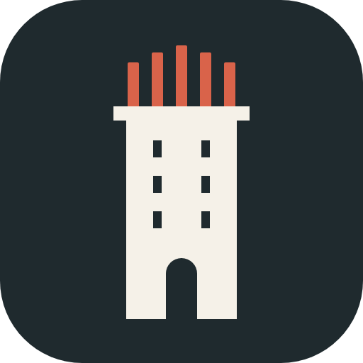
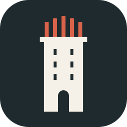
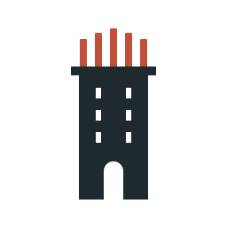
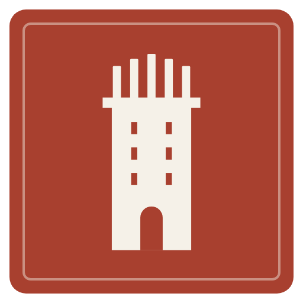
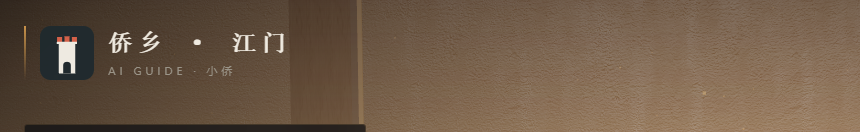

旧标用「侨批信封 + 声波」拼出两个符号，各说各话；新标只用一个形——碉楼的塔身、顶檐、拱门，本身就是江门，也本身就在说话。

三个构件全部来自碉楼本身，没有一个是外挂上去的装饰。
比例 1 : 1.9，顶部外挑 18px。这一圈挑出的线脚是碉楼最好认的轮廓，方盒子一旦加上它，就从楼房变成了碉楼。
五条等距竖条，中间高、两侧低。读建筑是顶层柱廊，读功能是发声波形——不靠加一个喇叭来表达「会讲」。
两列三排窄窗是碉楼的防御性开窗；底部拱门是唯一入口，正对「走进展厅、开始听讲」这个动作。




三处落地：软件界面左上角、exe 文件与窗口图标、答辩 PPT 首尾页。

配色沿用 v1：碉楼青 #1F2A2E ／ 宣纸米 #F5F1E8 ／ 侨批朱砂 #A8402F。字体：思源宋体 + 思源黑体。